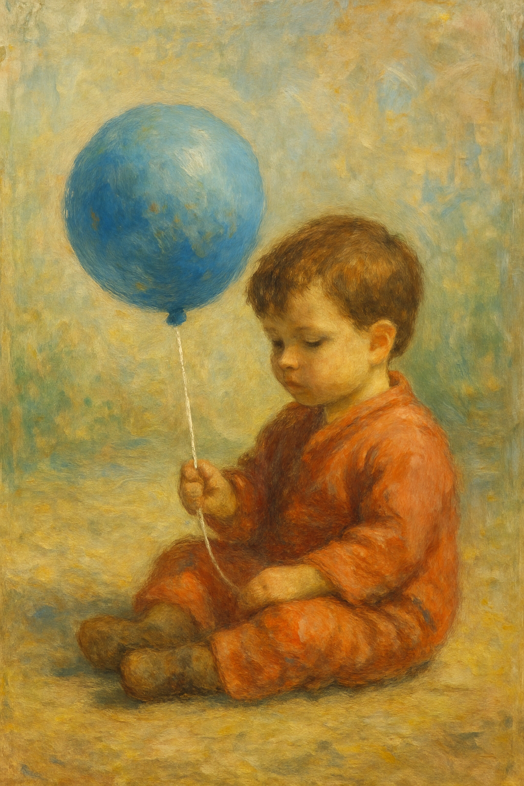
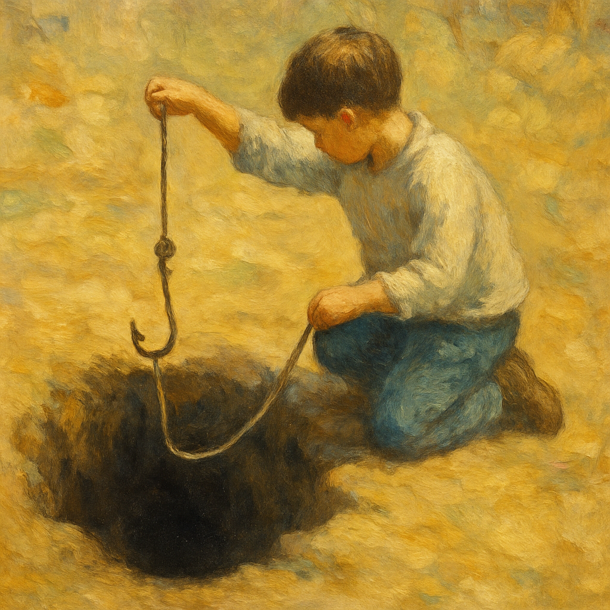
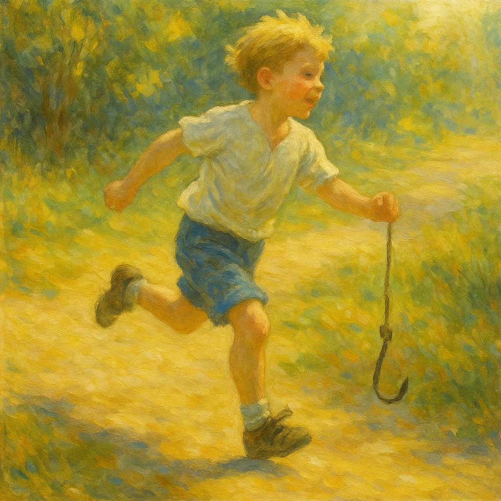
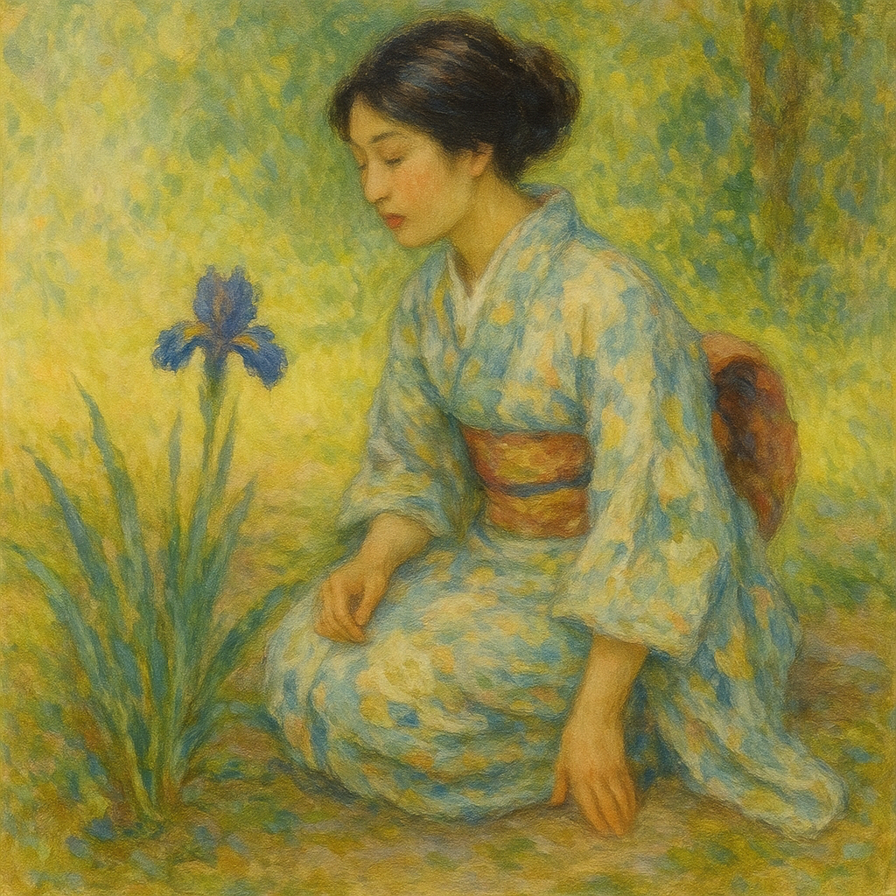
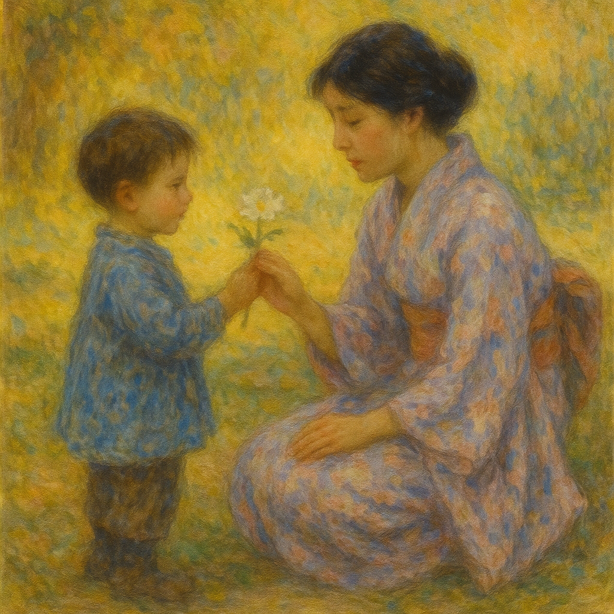
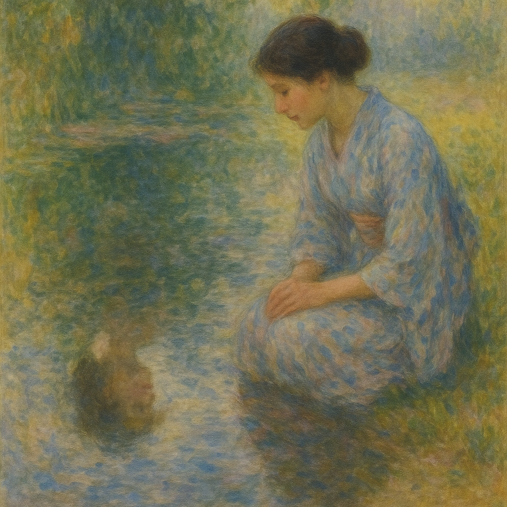
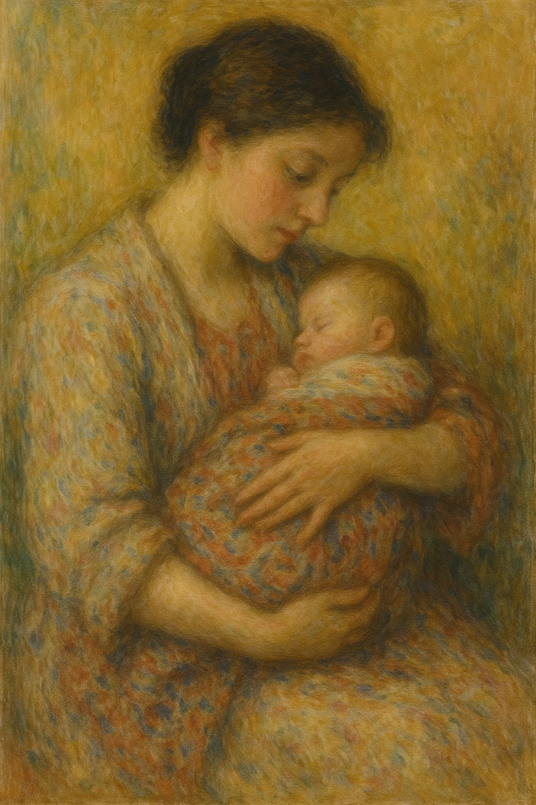
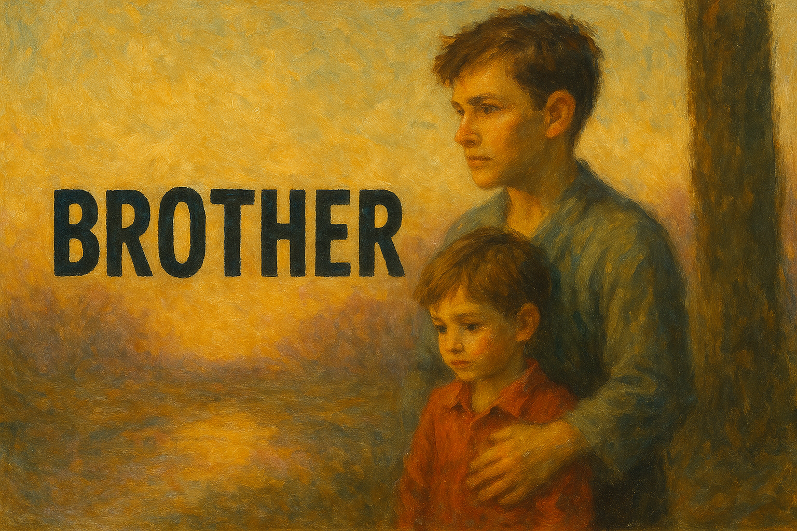
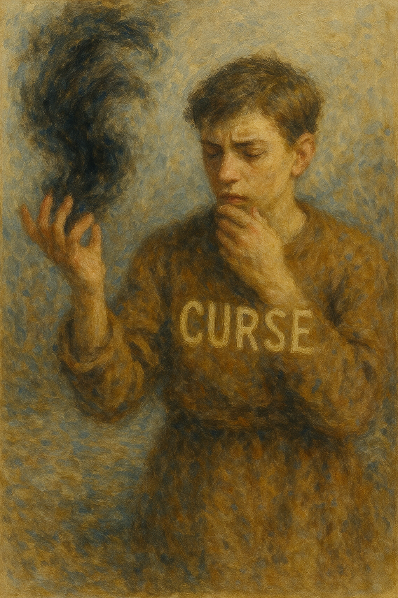
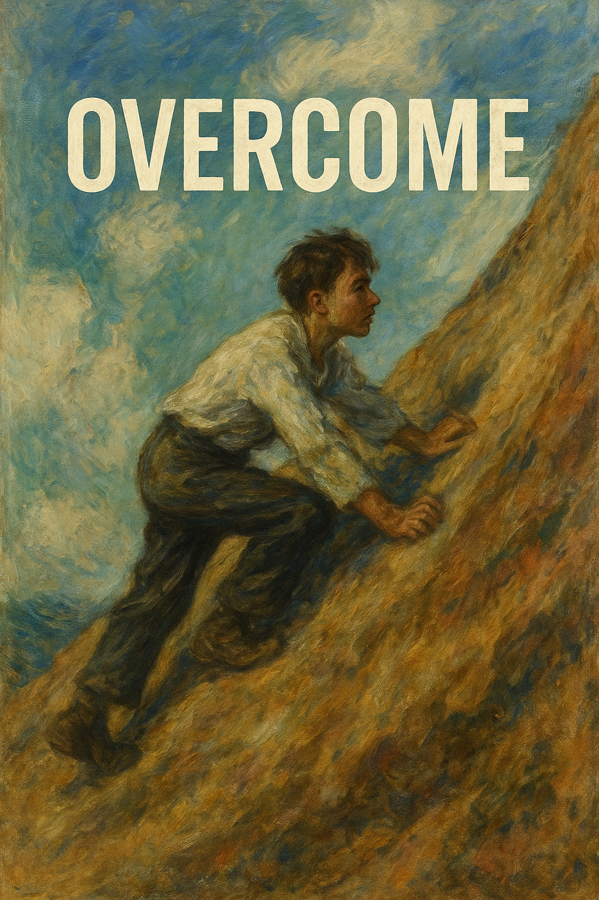

A child sits alone, holding a round balloon. Every story begins with a child—small, curious, full of potential.
子
On: シ、ス・Kun: こ
↑ Back to Top

A child lowers a hook into a dark cavity, hoping to pull up something unknown. It’s scary—but also a little exciting.
子 + 乚
On: コウ・Kun: —
↑ Back to Top

A child rushes off, forgetting his belt. He thinks he's done getting dressed—but something’s missing. “Complete” isn’t always perfect.
了
On: リョウ・Kun: —
↑ Back to Top

She kneels, peaceful and powerful. The shape of nurture and resilience.
女
On: ジョ、ニョ、ニョウ・Kun: おんな、め
↑ Back to Top

A child and a woman—love between generations. What we like often begins with what we’re loved by.
女 + 子
On: コウ・Kun: この-む、す-く
↑ Back to Top

A woman looks into a mirror—and sees not herself, but her mother. “I’m becoming like her,” she whispers.
女 + 口
On: ジョ、ニョ・Kun: ごと-し、ごと-く
↑ Back to Top

She holds you before you even know the word “mother.” Her heartbeat becomes your lullaby.
母
On: ボ・Kun: はは、かあ
↑ Back to Top
A tool presses down as a needle pierces through layer after layer. It's not force—it’s focus. What pierces through is what lasts.
毌 + 貝
On: カン・Kun: つらぬ-く
↑ Back to Top

He walks ahead, not too far—just far enough to watch over you. A brother clears the way.
口 + 儿
On: ケイ、キョウ・Kun: あに
↑ Back to Top

A brother whispers strange words into the air. “Don’t repeat that,” he warns. Curses begin with words—but not all words should be spoken.
口 + 兄
On: ジュ、シュ・Kun: のろ-う

Printed

A younger brother stands at the base of a wall his older brother already climbed. He tightens his grip and begins. To overcome is to follow, and to go beyond.
古 + 儿
On: コク・Kun: —
↑ Back to Top